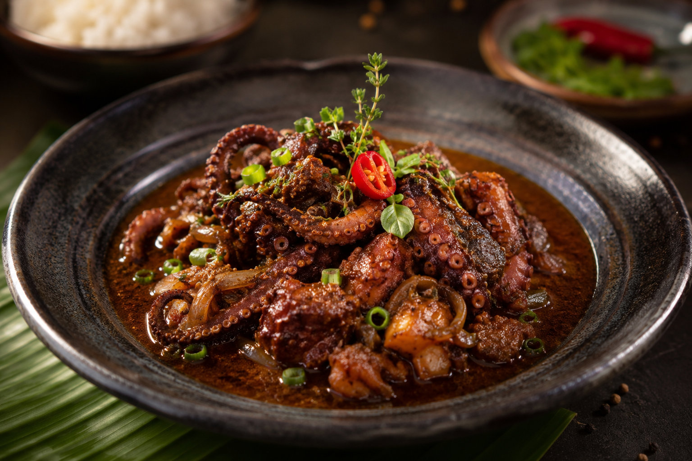

Le Civet zourite
Incontournable des tables dominicales et des repas en bord de mer, le civet zourite est un chef-d'œuvre de la cuisine créole. Ce plat d'une grande richesse aromatique met à l'honneur le poulpe (appelé localement "zourite") dans une version tropicalisée du civet traditionnel.
Mijoté de longues heures dans une réduction de vin rouge, agrémenté de clous de girofle, de branches de thym et de tomates bien mûres, il se distingue par sa sauce sombre et onctueuse ainsi que par la texture incroyablement fondante de ses morceaux de poulpe.
L'histoire et le secret du Civet Zourite
Le terme « zourite » désigne le poulpe en créole réunionnais. Historiquement pêché à marée basse sur les récifs coralliens de l'île à l'aide d'une fouine (une longue pique en fer), le zourite fait partie des produits de la mer les plus prisés et respectés de la gastronomie locale.
Le secret absolu d'un civet réussi réside dans l'art de rendre le zourite tendre. Traditionnellement, les pêcheurs battaient vigoureusement le poulpe fraîchement capturé contre les rochers pour briser ses fibres musculaires. Aujourd'hui, une technique moderne et tout aussi efficace consiste à le congeler pendant au moins 24 heures avant sa préparation, ce qui garantit une chair d'un fondant exceptionnel après cuisson.
La cuisson se déroule en plusieurs étapes clés. Le zourite est d'abord blanchi pour éliminer son eau, puis découpé en morceaux. On le fait ensuite rissoler dans une marmite en fonte avec des oignons émincés, de l'ail et du gingembre pilés, du thym frais et une touche indispensable de clous de girofle écrasés. C'est l'ajout de tomates concassées et d'un vin rouge corsé qui va donner naissance à cette sauce onctueuse caractéristique lors d'une réduction lente à petit feu.
À La Réunion, le civet zourite ne se conçoit pas sans ses accompagnements incontournables : un généreux lit de riz blanc volcanique, des grains (pois du Cap ou lentilles) et un rougail frais (comme un rougail mangue ou un rougail tomate) pour apporter du piquant et de la fraîcheur en bouche.